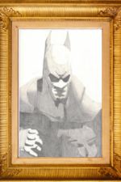

BRANDY
NGUYEN
Life doesn't give us a perfect start, but it is our own choice to make our imperfections into something worth more than gold.
Programming Qualifications

In fact, I've taken multiple classes on Object Oriented Programming in which Java was primarily used.
I went from creating functions that accept user input to file manipulation to managing a database with Java.
I have briefly used SQL to manage entities and attribute in databases.
I learned to use SQL statments to insert new data, request information in specific views, and create new tables.
I should mention how I was able to make a program in Java that let me use SQL statements to write to the SQL server.
 Currently, I am learning how to make webpages with HTML.
Currently, I am learning how to make webpages with HTML. So far, I enjoy trying to learn and master HTML structuring techniques to align with the goals of the W3C standards.
I want to keep up with standards to guarantee that as many users as possible are able to access and comprehend my content.
 At the same time as I am learning HTML, I am also learning how to use CSS.
At the same time as I am learning HTML, I am also learning how to use CSS. As you may not be aware of this, anyone can have the exact same content in their webpages but present it differently in their own way.
Despite myself saying that, this webpage was built upon a file that my peers could already access.
This is one of many iterations of that webapge but with my own style and personality weaved into it as I continue to learn.
Look at my Art Gallery!

WOW!
So amazing!